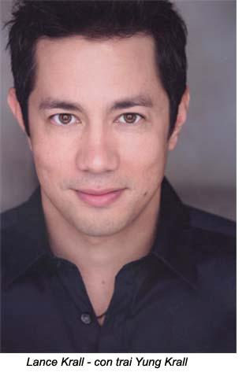

Chương 26

hững ngày đầu của tôi trên đất Mỹ như đi qua trong sương mù dầy đặc, dưới bầu trời không trăng không sao, như những ngày cuối cùng tôi ở Việt Nam. Tôi không còn nhớ gì nhiều quãng thời gian ngắn ngủi ở nhà chị Cương ở Monterey, California. Hai chị Kim, Cương dẫn tôi đi mua áo cưới ở Carmel. Chi cho biết đây là một nơi nên thơ, tình tứ, cho các cô dâu đi sắm áo cưới. Tôi chỉ lẳng lặng đi theo hai chị, vì sợ các chị lại tưởng tôi không yêu John. Tôi yêu John lắm chớ! Vì yêu ma tôi bỏ quê hương, bỏ má và ba đứa em mà bay sang xứ sở xa lạ này, xa hơn mười ngàn dặm!
Những ngày đầu ở Mỹ, tôi cứ bị câu hát ru em ám ảnh: “Con chim đa đa đậu nhánh đa đa, chồng gần không lấy, đi lấy chồng xa. Một mai cha yếu, mẹ già… Chén cơm đôi đũa, bộ ký trà ai dưng”. Trong khi đó, chị Cương nhắc đi nhắc lại: “Cánh cửa này chỉ mở một lần, cưng không bước vô, nó đóng lại để tới lượt người khác”. Nghe chị tôi nói hoài, tôi bèn nói chơi: “Đứa nào muốn vô phải bước qua cái xác của em.
Chị Kim dẫn tôi đi nhiều tiệm bán áo cưới lắm, nhưng tôi chỉ một tiệm. Tôi không nhớ thử áo cưới nào, chỉ nhớ chị tôi nói áo quá dài phải lên lai, về siết eo cho nhỏ. Tôi cũng không nhờ ai trả tiền áo cho tôi. Chị tôi vui khi đi sắm sửa cho em đi lấy chồng, còn tôi thì như cái xác không hồn, đi mà miễn cưỡng, đi ở Carmel mà nhớ nắng Việt Nam, nhớ má, nhớ ba đứa em. Tỉnh Carmel nhiều cảnh đẹp, nhà đẹp, có biết bao nhiêu là du khách tôi cũng không ngắm. Chị tôi hơi bực mình vì cử chỉ thờ ơ và tôi. Tôi chỉ nhớ, khi đem áo cưới về nhà, tôi đứng trước gương cho các chị ngắm nghía, rồi việc cắt xén các chị là, tôi không có ý kiến.
Tôi không gởi thiệp hồng mời ai đự đám cưới, vì tôi không có một người bạn nào ở Mỹ cả. Bạn tôi đều ở Cần Thơ, người nào cũng đã có gia đình, sống êm đềm trong hạnh phúc. Chỉ có mình tôi dám mạo hiểm đi lấy chồng xa.
Bạn của hai chị tôi phần đông là các anh các chị người Việt ở trường sinh ngữ Monterey Presidio và các sĩ quan Việt Nam Cộng hoà du học ở trường Naval Postgraduate School. Bạn của John là những phi công Hải quân và Người nhái Mỹ. Họ cùng vợ con ở những phi đoàn xa tới dự. Rể phụ Goldstein, một bác sĩ quân y. Anh là bạn thân của John của họ còn tung hoành bay nhảy ở các căn cứ trong vùng Đông Nam Á..
Ngày cưới của tôi không có ba má chứng kiến. Cái cảnh ba tôi vui vẻ bắt tay chú rể và má tôi rưng rưng nước mắt sung sướng cho con, chỉ là mộng mơ của tôi thôi. Tôi nói với chị Kim “Không có ba má chứng kiến đám cưới, biết vậy em theo trai khác rồi”. Tôi bị hai bà chị lườm trách móc. John và hai chị tôi cứ giới thiệu với tôi từng người khách, mà tôi đâu có biết ai là ai, ngoài tên, tay bắt mặt mừng, đi qua rồi, họ chỉ là một người lạ.
Cha Fritzpatrick của nhà thờ trường Monterey Postgraduate School bắt chúng tôi quỳ suốt hai tiếng đồng hồ để nghe lời giảng về hạnh phúc gia đình, đạo làm người, trách nhiệm với bạn bè, với đất nước và với Thiên Chúa. Sau đó, rể phụ, người nước Thái, nửa đùa nửa thật, nói với chúng tôi là từ đây anh không làm rể phụ cho đám cưới của người Thiên Chúa giáo nữa, với ông cha là người Ái Nhĩ Lan. Hôm đó, cha uống rượu hơi nhiều với một cha từ Trung Quốc sang thăm; 40 năm trước, họ là hai đứa nhỏ giúp lễ ở một nhà thờ nhỏ ở Trung Quốc; hôm nay ngày đoàn tụ, hai cha đã chúc tụng nhau qua nhiều chai rượu.
John đã sắp xếp trước: anh nghỉ phép một tháng, để chúng tôi vừa hưởng tuần trăng mật vừa cho tôi biết quê hương anh. Chia tay với hai chị của tôi ở Monterey, California xong, chúng tôi bắt đầu cuộc hanh trình bằng xe từ California đến Minnesota bên chồng, rồi từ đó lại về Johnsville, Pensylvania, nơi căn cứ Hải quân của John. Chúng tôi đã tôi nhiều nói trên đất Mỹ, viếng danh lam thắng cảnh, mà John hãnh diện cho tôi thấy cảnh thanh bình, trù phú của quê hương anh, nhưng lúc nào trong tôi cùng hướng về quê hương ngàn trùng xa cách, nói có má và các em tôi. Nơi ấy, khói lửa đang ngập trơdi. Nhưng tôi cũng còn bổn phận làm vợ của tôi. Hai chữ “làm vợ” thật xa lạ với tôi, xa lạ như đất Mỹ mênh mông này. Mỹ thật bao la; ánh sáng văn minh chói loà khắp nơi, nhưng không chói loà đối với tôi. Tôi không biết John có thất vọng vì tôi dửng dưng mọi thứ? Đối với tôi lúc bấy giờ, chỉ có một thứ hấp dẫn tôi, đó là hệ thống giao thông tuyệt vời, và đêm nghủ không nghe tiếng bom đạn. Những lần cắm trại trong bóng đêm; chỉ có trăng sao, tiếng côn trùng hoà nhịp, không nghe tiếng súng. Không có lính chặn đường hỏi thẻ căn cước, không có một ổ gà nào; tất nhiên không có đắp mô hay xẻ rãnh. Ông trời cho xứ này nhiều quá, mà quên không nghĩ đến xứ sở của tôi! Hồi đó, xăng dư thừa, giá rẻ rể, các cây cạnh tranh nhau, tặng quà cho khách. Cứ mỗi lần cần xăng, ghé qua cây xăng Shell đổ, thì chọn được một cái đĩa, mấy cái tách uống café; cứ như vậy, từ California tới Pensylvania, chúng tôi có được một bộ chén đĩa.
Chúng tôi về thăm má của John và bà con giòng họ của anh ở tỉnh Ely nhỏ bé của tiểu bang Minnesota. Ở Ely, ngày nào má của John cũng tổ chức ăn uống, picnic, đi hái trái cây, câu cá, săn nai, tắm ở các hồ lạnh như nước đá. Tôi có dịp gặp bạn bè, thầy cô của John từ lớp 1 cho tới lớp 12. Ai cũng dặn dò John “take good care of this young lady”, làm tôi rất cảm động. Không biết người ta thương tôi vì tôi chỉ có một thân một mình nơi xứ lạ quê người? Hay là sau tuần trăng mật, tôi sẽ biết nước Mỹ lạnh lùng, cô đơn hơn nữa. Những ngày ở Ely, đêm nào tôi cũng khóc bên cạnh người chồng nằm ngủ ngon lành như một cậu nhỏ vô tư. Chúng tôi ở đó mười ngày, rồi từ giã mọi người, và hứa sẽ trở lại vào màa câu cá tháng 5 tới.
Tháng 9 năm 1968, chúng tôi tới Johnsville, Pensylvania, một căn cứ hải quân trong một tỉnh nhỏ; nơi đây, nhiệm vụ là John là lái thử những chiếc máy bay F-8 với những dụng cụ mới lạ.
Mỗi tuần tôi viết ba, bốn lá thơ về nhà cho má, cho mấy em, dì Dẽ, con Vân, con Sang. Thơ nào tôi cùng cho gia đình biết tôi vui, tôi hạnh phúc lắm, và đang học hỏi về đời sống ở Mỹ để hội nhập. Nhưng thật ra, đó chỉ là những lời không thật, hoàn toàn không thật, để làm yên lòng gia đình. Tôi đang buồn vô cùng, buồn như con chó đi ngoài xa lộ ồn ào, buồn như con chó Nô lúc chúng tôi rời Cảng Chú Hàng đi nơi khác. Tôi ngủ với nhilrng chiêm bao, mộng mị, cứ thấy mình ở Sài gòn. Có đêm tôi nghe tiếng nhạc Việt Nam khi ngủ. Lại có nhiều đêm tôi gặp ác mộng, thấy Việt Cộng âm thầm phá vỡ hạnh phúc của John và tôi. Có đêm chợt thức giấc về khuya, tôi nghe có mùi thức ăn Việt Nam quen thuộc. Nhưng khi tỉnh dậy, chỉ thấy tuyết trắng rơi ngoài cửa sổ. John đã đi từ sáng sớm. Tôi ôm gối, rồi ngồi khóc. Vì ở nhà một mình, không sợ ai biết, không làm phiền ai, mới đầu tôi còn khóc nho nhỏ, sau khóc lớn lớn, nức nở. Khóc tới mệt, rồi ngủ hồi nào không biết. Chiêm bao như vậy hết đêm này đến đêm khác. John không biết, má và các em bên nhà cũng không Một hôm, tôi gọi chị Cương:
- Em nhớ má, cho em về Việt Nam đi, chị. - Tôi nói bằng một giọng năn mỉ như hồi nhỏ tôi đòi chị đi theo lên Sài gòn.
Chị liền an ủi:
- Chị thông cảm cưng. Hồi trước qua Mỹ, dù có anh Wray và Tina chị cũng nhớ má, nhớ tụi cưng muốn bịnh luôn. Nhưng táng đi cưng. Lớn rồi, mình phải lập gia đình cho má vui. Cưng may mắn là được John thương cưng. Nhớ kỹ điều này: Có thằng điên nào mà quý cưng như vàng, khen cưng không tiếc lời, nào thông minh, nào can đảm… Có anh chàng sĩ quan ngoại quốc nào dám lấy cưng khi cưng nói thiệt cho họ biết ba mình là ai không. Hai đứa gặp nhau là cười, là vui như hội. Trời cho thì nhận, ráng gìn giữ hạnh phúc, nghe cưng. Cưng mà trở về Việt Nam bây giờ là mất hết. Cưng phủi ơn Thượng đế nếu cưng trở về Việt Nam bấy giờ.
Chị tôi tha thiết khuyên tôi. Tôi lắng nghe để chị khỏi buồn. Nhưng những lời của chị không thuyết phục nổi tôi, vì vậy tôi nghĩ tôi sẽ rủ John về Việt Nam với tôi.
- Em về thì má vui hơn. - Tôi cãi.
- Má vui khi thấy mặt cưng, nhưng rồi mà sẽ buồn lắm khi biết con của má yếu tinh thần. Má sẽ trách má, vì chắp cánh chim bay không nổi. - Chị tôi nói bằng một giọng vừa năn nỉ, vừa ru đe doạ.
Tôi vẫn ngoan cố:
- Em bay tới đây là xa lắm rồi. Em biết bay xa như vậy đủ rồi, chớ không phải tuổi con chim, mà bắt em bay tiếp.
Chị kiên nhẫn nói tiếp:
- Cưng đừng nghĩ vậy. Hồi đó, má cũng thương ông ngoại bà ngoại mình lắm, vậy mà má cũng theo ba vô trong bưng, chịu cực thân, làm cho ông bà xót xa thương má lắm. Khi má nghe nói mình ở bên này hạnh phúc má vui lắm, mà không đòi hỏi mình lấy chồng giầu nuôi má, mà má chỉ mong cho mình hạnh phúc. Cưng trả ơn má, là cưng phải sống hạnh phúc cho mình. Sau này chị em mình sẽ tìm cách rước má với mấy em qua chơi với chị em mình.
Nghe nói đến chuyện bảo lãnh má và các em qua Mỹ sống, tôi chợt thấy một chân trời mới, có tia hy vọng sáng ngời. Lời chi Cương có một sức mạnh khiến tôi ra khỏi trạng thái buồn bã. Tôi tính ngay trong bụng: một đàng tôi về với má và các em, một đàng má và các em sang Mỹ với tôi, đang nào hay hơn? Tôi đồng ý với chị Cương. Nếu sang Mỹ được, má tôi sẽ thoát khỏi tầm tay của Việt Cộng. Lúc đó mà sẽ không còn hát: “Ngày trở về, anh bước lê trên quãng đường đê bên bên luỹ tre. Nắng vàng hoe, đến bên luỹ tre, vườn rau trước hè vui đón người về”.
Một hôm, John đi công tác ở Bermuda, tôi lại chiêm bao thấy mình đi trên những con đường quan thuộc ở Sài gòn, ghé qua tiệm sách trên đường Lẽ Lợi, rồi mở cửa nhà hàng chị Kim Hoa nhìn vào. Trông thấy anh Nguyễn Đạt Ihịnh, ông Thái nhà in, ông Nguyễn Thanh Hoàng (bao Văn Nghêh Tiền Phong), anh Đặng Văn Huấn và mấy ông nhà văn bạn nhậu của anh. Tôi trở ra, tiếp tục đi nghe tiếng ồn ào quen thuộc của Sài gòn, tiếng người nói, có cả mùi đốt rác phảng phất đâu đây. Tôi giựt mình thức giấc, thấy mình vẫn đang ở trong căn nhà mới lạ. Tôi soi gương, thấy mình đổi khác. Đứa con gái tinh nghịch, ranh mãnh, thông minh biến đâu mất. Trong im lặng, tôi nghe như chính tôi cũng tự trách mình đã bỏ bê mình. Từ mấy tháng nay, tánh nết của tôi đã thay đổi nhiều. Tôi đang từ một con người chăm chỉ, thích tự lập và cứng rắn, đã trở nên lười biếng, yếu đuối, vô trách nhiệm. Tôi tự nhủ phải cố gắng vươn lên, để trở lại con người bình thường cũ. Nếu cứ tiếp tục sống trong ươn hèn, yếu đuối sẽ bị John coi thường. Hồi chúng tôi mới quen nhau. John hãnh diện về tôi, vì anh tin là trong bất cứ hoàn cảnh nào tôi cũng đối phó được, dù phải sống xa anh. Nghĩ vậy, tôi quyết định trở về với bản tánh cũ của tôi: không thể uỷ mị, yếu hèn được, phải chấp chấp nhận xa gia đình, lìa bỏ quê hương để xây dựng tương lai hạnh phúc thì phải đi trên con đường mình đã chọn.
***
Vào đầu mùa thu năm 1970, chúng tôi nhận được một tin mừng. Hải Vân sẽ được đi Mỹ học lái máy bay, Em sẽ học ở Lackland, tiểu bang Texas, và sau đó sẽ đi trường khác để học lái trực thăng.
Em đã miệt mài học ngày học đêm để thi vào không quân. Giấc mơ của em là lái trực thăng, và được ở căn cứ Biên Hoà. Có lần tôi hỏi em sao không về Cần Thơ, quê hương mình? Em cho biết Cần Thơ không phải là đất lành, nên chim không đậu được. Tôi mới nhớ rằng gia đình tôi cũng đã tìm cành khác mà đâu, và Cần Thơ cũng không còn là “đất lành” nữa.
Vào trường huấn luyện, Hải Vân tiếp tục được bằng “xuất sắc” suốt thời gian em học. Em làm bản sao những giấy khen này để gởi cho chị Kim, chị Cương và tôi. Bản chánh cho má. Hải Vân là người thông minh, học giỏi. Hồi còn học ở trường nam Tiểu học Cần Thơ, em cũng mang nhiều giấy khen về cho má coi, sau đó má gởi bản chánh về cho ông ngoại giữ. Tôi nhớ có lần ông ngoại tôi mở ngăn tủ bàn thờ, nơi ông cất những giấy tờ quan trọng, và giấy khen của anh Quốc và Hải Vân, rồi ông nói:
- Học trong vùng quốc gia, không giúp được nước cũng được nhà. Tụi bay mà học theo đồ “chó đẻ” ngoài Bắc thì lại làm cộng sản; nó chờ con nít có xương có thịt lớn lên một chút, thì cho học giết người, cướp của cho thằng Hồ. Nhớ ăn cây nào rào cây nấy. Đừng có nghe đám lớn trong nhà này; cả lũ vừa đi vừa hát trong họng “Ơn cách mạng bằng trời bằng bể, công Cụ Hồ phải kể bao năm”. Ơn cháu mang là ơn của má cháu, công cũng là công của má cháu, chớ không phải của thằng già chó đẻ kia đâu, nhớ không?
Sau khi Hải Vân nhập ngũ, tháng 5 năm 1969, tôi rước má và Minh Tâm qua Mỹ thăm chúng tôi, với hy vọng là má sẽ thích nước Mỹ và ở lại: sau đó chúng tôi sẽ bảo trợ Hoà Bình. Hải Vân được tên thân vào không quân. Má không còn lo thức khuya dậy sớm lo em đi chơi về nữa. Bây giờ tôi lượt trung tâm huấn luyện canh giờ “giỏi nghiêm” của nó thay má tôi.
Minh Tâm sang Mỹ chỉ một vài tháng thì có tin Hải Vân cũng tới Mỹ. Chúng tôi ra gặp em. Không quân cho gia đình và em ra đi chơi nữa ngày. Chúng tôi dẫn em đi Knock Berry gần đó để tiện việc trở về đúng giờ với nhóm lính của em.
Vừa đi, hai chị em vừa líu lo chia xẻ niềm vui của mình. Tôi cho Hải Vân hay, khoảng tháng 12 em được lên chức làm cậu. Nó rất mừng, câu cổ tôi mà xúc động vô cùng. Em dặn: “Suốt đời chị lo cho má và tụi em. Bây giờ có chồng có con, mình lo mình đi nhen”.
Rồi Hải Vân lên đường tiếp tục bay qua Kackland, Texas. Mấy tuần sau, nó viết thơ không có nói gì nhiều về trường huấn luyện, mà nói đàn anh tử tế tế, chỉ huy trưởng rất tốt với mấy con em mới. Dăhn gia đình đừng lo, nó đang ở thiên đàng. Rồi em nói đến những cô con gái Mỹ tóc vàng, tóc đỏ, mắt xanh nó gặp trong bữa tiệc, trong những buổi đi picnic do nhà thờ bảo trợ. Sinh viên Việt Nam được đưa đến các tư gia để biết đời sống gia đình Mỹ. Em tôi lọt vô mắt xanh của cô con gái ông mục sư. Thằng nhỏ phải đi nhà thờ mỗi chúa nhứt để sau đó được về nhà mục sư gặp cô con gái. Em vừa cười vừa khoe:
- Con nhỏ mê em quá rồi!
Tôi nửa đùa nửa thật hỏi:
- Cưng có muốn cưới nó rồi ở lại Mỹ luôn không?
Em liền trách tôi:
- Em chưa đánh giặc ngày nào, đừng có xúi bậy. Chị đi lính không được, em đi thế cho chị nè. Được con gái mê thì cũng thích, cái tôi lớn hơn một chút cho vui, chớ ai lại để con gái làm hư đời mình!
Hải Vân nóng lòng đem những gì học được sau kỳ huấn luyện về phục vụ đất nước. Tôi thì khoe rằng cái thai trong bụng tôi khoẻ lắm, đạp tôi liên hồi. Chắc thằng nhỏ sau này thành một cầu thủ tài ba.
Từ Lackland, Texas, lớp của Hải Vân được chuyển tới Hunter Airfield ở Savannah, Georgia, để thực tập lái Huey. John và tôi rất vui mừng và hãnh diện khi Hải Vân ra trường hạng nhất. Lớp của em có nhiều sinh viên các nước, như Canada, Đại Hàn… Trung tướng giám đốc trường viết thơ riêng cho tôi. Ông khen má tôi có thằng con học giỏi. Má tôi đã quen với những giấy khen của các thấy, cô giáo, mà lần nào má cất và thưởng Hải Vân. Nhưng kỳ này, nhận được giấy khen của trung tướng Không quân Mỹ, má tôi lại không nhắc gì đến nó trong những lá thơ viết cho tôi hàng tuần. Khi tôi hỏi thì má tôi hỏi, má nói:
- Khó cho má vui được, khi nhận được cái giấy khen này. Em của con lớn lẹ quá. Trong khi tôi, ba và anh Khôi con ở ngoài Bắc. Mà thôi, Hải Vân nó chọn con đường đó, là mình chánh thức cho mấy người ngoài kia biết mình không có theo họ. Tụi con chán cộng sản hoài đâu có ai nghe; Hải Vân đăng vô không quân và tiếng đồn chắc ra tận ngoài Bắc rồi.
Ngày 9 tháng 12, 1970, con tôi chào đời ở nhà thương Fort Ord, một căn cứ Lục quân. Nơi này giáp với tỉnh Monterey California. John đặt tên nó là Lance David Krall, Lance là tên một người bạn thân trong đội bơi lội hồi học trung học. David là tên chú rể phụ David Goldstein.

Giáng sinh năm đó Hải Vân được đi phép, tôi rủ em đến California gặp mặt thằng cháu mới ra đời. Những Hải Vân biết chị Kim tá Washington D.C, đẹp quá, hấp dẫn quá, em phải qua thăm vì chỉ có dịp này thôi. Hải Vân còn hẹn gặp tôi với Lance vào dịp Tết sắp tới ở Việt Nam. Tôi thất vọng, vì chắc phải lâu lắm tôi mới có thể bồng con về Việt Nam thăm gia đình
Những nỗi thất vọng ấy chỉ là một mối buồn nhỏ, không đáng kể so với cái tin khủng khiếp tôi nhận được sau Giáng nhinh đó. Hải Vân tử nạn! Ngày 11 tháng Giêng, năm 1971, chị Kim gọi từ Washington D.C, cho biết chiếc Huey do Hải Vân lái bị rớt trong một trận bão tuyết hiếm có ở Savannah, tiểu bang Georgia. Chị tôi và tôi, mỗi người một nơi, cùng ôm cái điện thoại mà không nói được lời nào nữa. Chúng tôi như chết nửa thân người, còn hồn tê dại đến độ không sao khóc được.
Chị tôi chờ niên trưởng của Hải Vân gọi lại. Tôi phải đưa Lance cho John bồng, vì lúc đó tôi không dám ôm nó trong lòng, cũng không muốn gần ai trong giờ phút đó.
Mấy tiếng đồng hồ sau, chị tôi gọi lại. Không quân chánh thức xác nhận em tôi và một phi công khác tên là Nguyễn Văn Bé tử nạn.
Tôi nghe như có tiếng la hét trong đầ tôi: “Không, không phải em tôi chết đâu. Không phải Hải Vân chết đâu. Người ta lộn tên rồi. Em tôi mới 21 tuổi, chỉ mơ ước được về nước đánh giặc. Giấc mộng chưa thành, em không thể chết được. Tôi ngồi co quắp dưới chân giường, cầu xin Trời, Phật, van nài Chúa Jesus cho tôi được sống, tôi sẵn sàng chết thế, sẵn sàng dâng hiến cả cuộc đời tôi cho em. Tôi đã sống trên đời này nhiều rồi, đã từng cay đắng, gian truân, từng lao đao, cực khổ, từng nem mùi ngon ngọt của hạnh phúc; tôi đã yêu và đã được yêu, tôi sẵn sàng chết để em tôi được sống. Tôi xin cho em lá gan, lá phổi, cánh tay, cái chân, con mắt để em được sống. Tôi tới một nhà thờ nhỏ trong khuôn viên trường Monterey Postgraduate là nơi chúng tôi đã làm hôn lễ, để cầu xin Thượng đế hãy cho biết tôi phải làm gì bấy giờ. Tôi có nên về Việt Nam với má trước khi Không quân đưa xác em về không? Hỏi Chúa, Chúa không trả lời. Tôi chạy tới nhà thờ lớn hơn ở Pacific Stewe xin cha cho tôi một người hướng dẫn, vì tinh thần tôi đang sa sút, bấn loọn. Từ khi nhận được hung tin, tôi chẳng biết gì, cứ ngồi trong xe chạy loanh quanh, lúc thì dạt vào bãi cỏ, lúc thì chạy ngoài đường tìm nhà thờ, tìm Chúa, mà không về nhà. Tôi mới sanh con có 32 ngày, tôi sợ tôi phát điên mất. Đã có lần, vì đâu đớn quá, tôi đã có ý tưởng điên rõ là má và tôi cùng chết một lượt để tránh nỗi đau thương này. Nhưng tôi lại nhận ra chết như vậy là vô trách nhiệm, là hèn nhát, là tàn nhẫn với tất cả mọi người trong gia đình. Để gạt bỏ những ý nghĩ điên rồ, tôi vô nhà thờ dung thân.
Cha trả lời tôi một câu thật ngắn gọn. Dường như ông đã biết hết nỗi lòng của tôi, biết rõ mọi chuyện trong gia đình tôi và cũng hình như ông đã nghe Đức Chúa Trời phán hồi tối hôm qua.
- Thượng đế đã chọn em của con, một đứa con xứng đáng để phục vụ Ngài.
Đã nhiều lần tôi tìm tới Chúa, tôi mong mỏi được gần Chúa, muốn đem Thiên Chúa vào đời sống của tôi, vì má tôi rằng muốn cho gia đình có hạnh phúc, vợ chồng nên mất đạo. John chắc không bỏ đạo Thiên Chúa, còn tôi nên theo đạo của anh để cho gia đình được hoà thuận. Tôi đã vâng lời. Bay giờ cần tới Chúa, tôi cảm thấy mình lạc lõng hơn! Không biết cha nói có đúng như vậy không? Có phải Chúa chọn đứa con xứng đáng, hay là cha chỉ muốn an ủi tôi? Có thật là Chúa chọn Hải Vân không? Nếu thật, Chúa đâu có quyền bóp chết linh hồn của gia đình tôi, của má tôi. Chúa toàn năng thì lẽ nào Chúa cho rồi nửa chừng lấy lại. Má tôi là người phàm, mà khi chờ ba, má cho luôn làm hành trang vào đời để sống, má có đòi gì đâu!
Nếu trong đời, má tôi cần tới con cái và gia đình, thì lúc này má tôi cần nhứt. Nỗi đau tôi mang trong lòng, không sao sánh được với nỗi đau của má tôi. Tôi muốn về với má và ba đứa em, nhưng tôi không về được. Visa nhập cảnh Mỹ chỉ có một lần. Về Việt Nam rồi trở qua sẽ không được vô Mỹ nữa. Ngay việc xuất cảnh khỏi Việt Nam lần thứ nhì cũng không được, trường hợp của chị Kim tôi cũng vậy. Chị em tôi còn mang quốc tịch Việt Nam.
May mắn là anh Wray, chồng chị Cương, đang phục vụ cho Lục quân Mỹ ở Thái Lan, nên chị vế được, và chị đã cho hay chị sẽ về với má và các em. Chị Kim sẽ đi Savannah nhìn Hải Vân lần cuối, và trường của em sẽ làm lễ truy điệu trước khi đưa em về cho má.
Thời gian như đông lại. Thế giới bên ngoài gia đình dường như đã tan biến hết. Bây giờ tất cả chỉ có cái chết của má tôi. Chúng tôi chờ tin Không quân cho biết ngày nào sẽ đưa Hải Vân về Việt Nam. Chờ để làm gì? Để thấy má tôi ôm cái quan tài khóc cho thằng con chết yểu? Chờ để biết rằng vận hạn không may đã chôn vùi tương lai của một thẳng con trai thông minh, yêu nước, yêu gia đình? Chờ để biết rằng ước mơ của gia đình tôi đã bị chôn vùi, chôn tiếng cười, tiếng đàn guitar của em; và một phần đời của chúng tôi cũng chôn theo em. Bảy ngày chờ đợi dài vô tân. Nhưng rồi cũng người ta đưa quan tài của em về Việt Nam.
Tim tôi tan vỡ. Tôi quá cô đơn, thấy mình yếu đuối, bé nhỏ trong tay định mệnh. Cho tới ngày nay, đã 39 năm qu, tôi vẫn còn giận khi nhớ tới lời nói của ông linh mục, vẫn còn thương nhớ em tôi mỗi lần nghĩ tới nó. Tôi đoán. Ở bên kia thế giới, em cũng giận, cũng tiếc, vì chưa một ngày nào được phục vụ đất nước. Em tôi chết rồi, mà cộng sản còn lợi dụng cái chết của nó để tuyên truyền. Chúng báo cho ba tôi biết là CIA đã giết Hải Vân vì chúng biết em là con của ba tôi. Tôi giận sôi gan, vì ba tôi tin lời tuyên truyền đó, tin cho tới ngày ông lìa khỏi cuộc đời.
Tôi thất vọng, vì ba tôi nhìn đàn con lớn lên qua lăng kính cộng sản. Vì vậy, ông không thấy được rằng ngoài người con trai kỹ sư tên lửa, ông còn một thằng con trai khác nữa, thông minh, lanh lợi không kém anh nó.
Cuộc điều tra tai nạn máy bay của Hải Vân đã diễn ra rất chu đáo. Không có gì đáng nghi cả. Sau này chồng tôi được đổi về Ngũ Giác Đài, làm việc cho cơ quan tình báo của Hải quân. Anh xem bản kết quả của cuộc điều tra. Hải Vân bay quá thấp, và khi bão đến, muốn bay cao hơn không kịp nữa, nên bị đụng dây điện trong rừng thông.
Phải nói là em tôi bất hạnh, gia đình tôi bất hạnh, nhưng tôi không phải là nạn nhân của bất cứ ai.